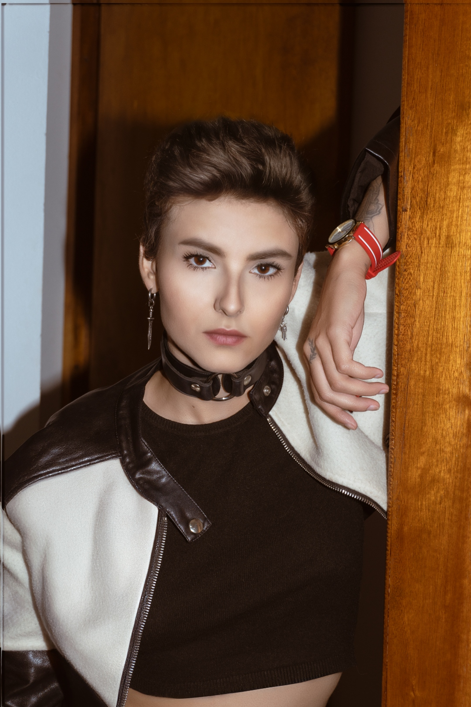
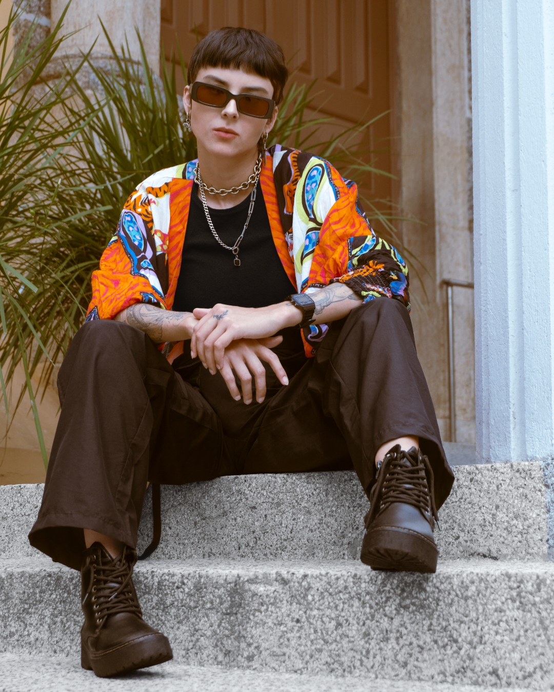
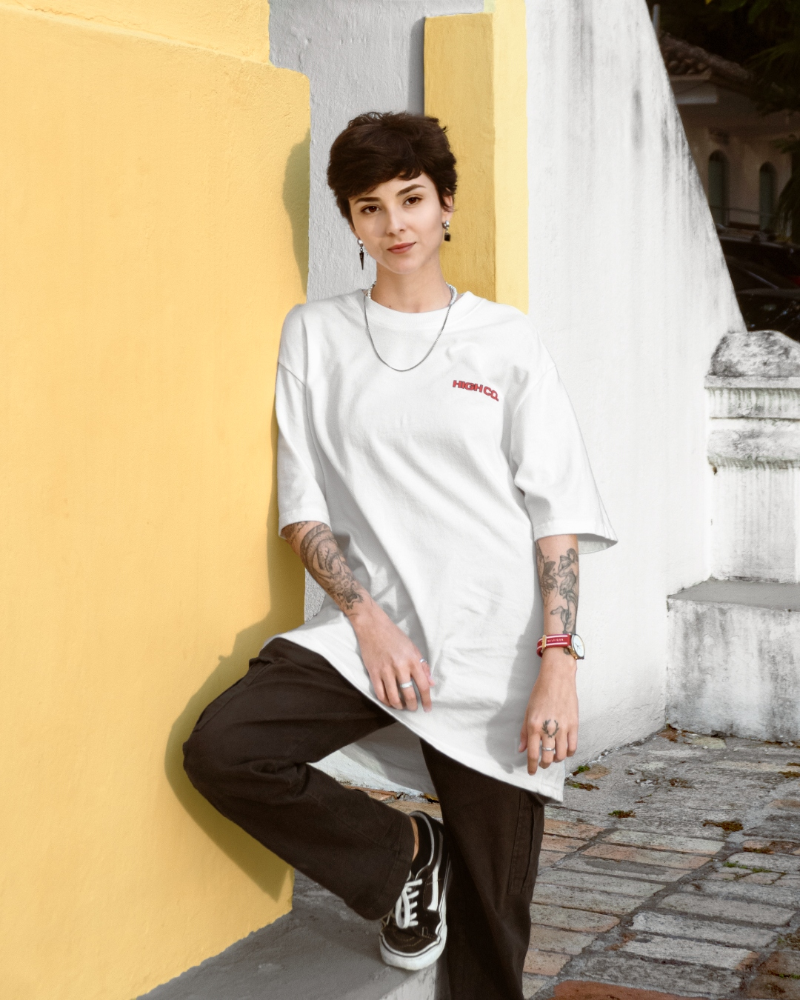

01
Ritual Noturno
Floripa · techno · tech house · noise — DJ sets para pista, festival e after-hours. Booking direto, sem intermediário.
"Eu não procuro batida certa. Procuro o momento em que a pista para de fingir. CHDX é isso — oferenda sonora pra quem veio dançar, não pra quem veio posar." — Patrícia Chêda, 2026
Patrícia Chêda é selectora radicada em Florianópolis. Sob o projeto CHDX, atravessa techno, tech house e noise com estética de xilogravura e serigrafia. Sem playlist fixa — leitura de pista em tempo real, camadas de ruído, groove e tensão que crescem sem pressa. Cada set é um ritual, não uma playlist. Toca em clubes, festivais e after-hours no Sul e Sudeste do Brasil, com residências pontuais em Floripa.





Direto, sem agência.
pat@chdx.fm